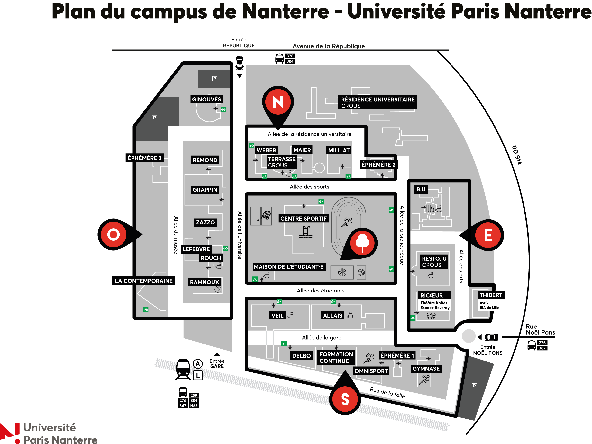

Informations Pratiques
Localisation
Où ? : Piste d'athlétisme universitaire de Nanterre .
Matériel
Matériel à prévoir par les participants : Pointes d'athlétisme (6mm maximum) ou running, tenue de sport adaptée, gourde personnelle.
Matériel mis à disposition : Starting blocks, dossards, chronométrage Chronométrage : Système de chronométrage électrique (FinishLynx) pour des résultats officiels.Services
Buvette et DJ.
